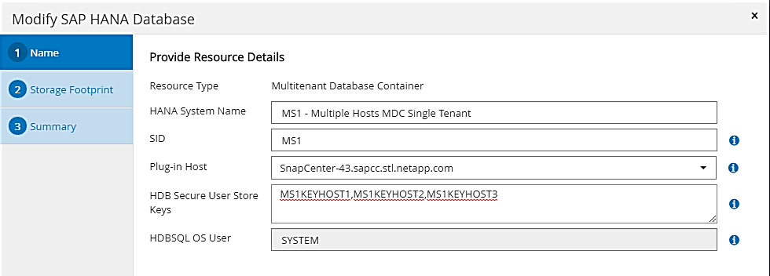
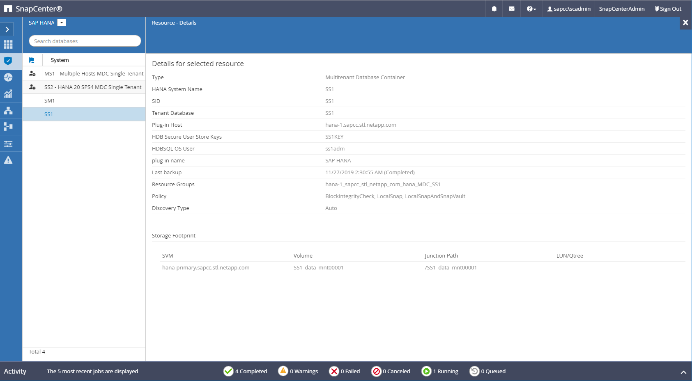
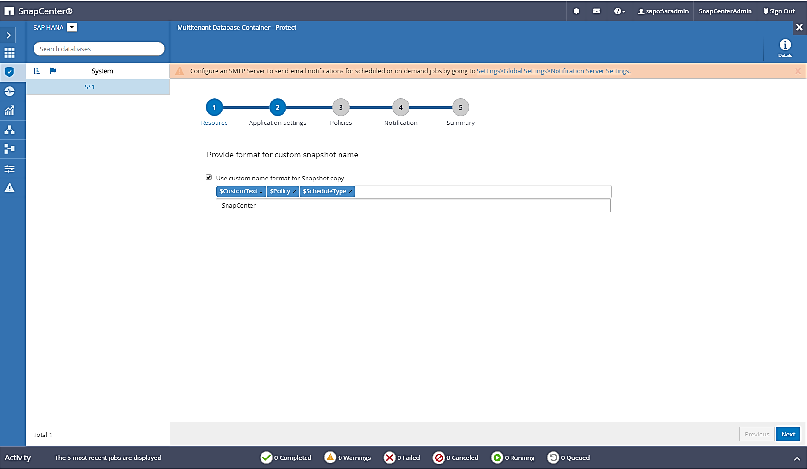
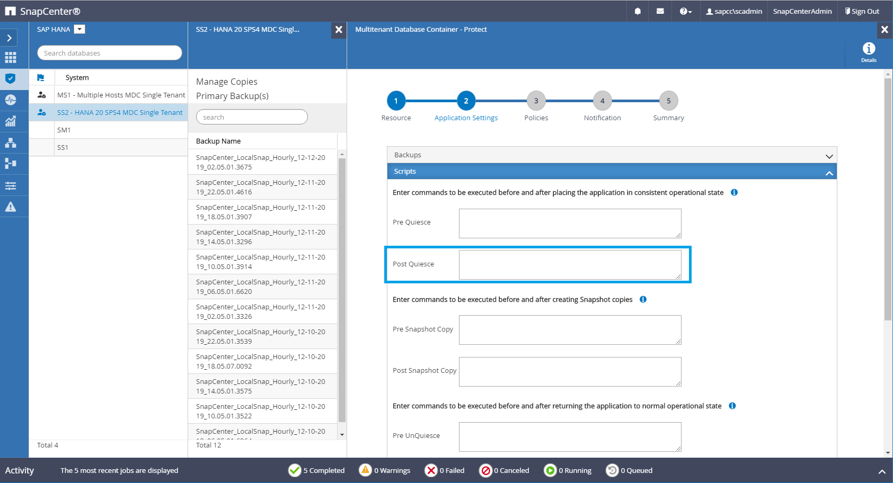

Demander de modifier un document
Demander de modifier un document Modifier sur GitHub
Modifier sur GitHub Guide des contributeurs
Guide des contributeursConfiguration SnapCenter propre aux ressources pour les sauvegardes de bases de données SAP HANA
Contributeurs
Cette section décrit les étapes de configuration pour deux exemples de configuration.
-
SS2.
-
Système à locataire unique SAP HANA MDC unique utilisant NFS pour l’accès au stockage
-
La ressource est configurée manuellement dans SnapCenter.
-
La ressource est configurée pour créer des sauvegardes Snapshot locales et vérifier l’intégrité des blocs de la base de données SAP HANA à l’aide d’une sauvegarde hebdomadaire basée sur des fichiers.
-
-
SS1.
-
Système à locataire unique SAP HANA MDC unique utilisant NFS pour l’accès au stockage
-
La ressource est découverte automatiquement avec SnapCenter.
-
La ressource est configurée pour créer des sauvegardes Snapshot locales, effectuer la réplication sur un stockage de sauvegarde hors site avec SnapVault et vérifier l’intégrité des blocs pour la base de données SAP HANA à l’aide d’une sauvegarde hebdomadaire basée sur des fichiers.
-
Les différences entre un système connecté à un SAN, un seul conteneur ou plusieurs hôtes sont reflétées dans les étapes de configuration ou de workflow correspondantes.
L’utilisateur de sauvegarde SAP HANA et la configuration du hdbuserstore
NetApp recommande de configurer un utilisateur de base de données dédiée sur la base de données HANA pour exécuter les opérations de sauvegarde avec SnapCenter. Dans la deuxième étape, une clé de magasin utilisateur SAP HANA est configurée pour cet utilisateur de sauvegarde, et cette clé de magasin utilisateur est utilisée dans la configuration du plug-in SnapCenter SAP HANA.
La figure suivante montre SAP HANA Studio par l’intermédiaire de lequel l’utilisateur de sauvegarde peut être créé.

|
Les privilèges requis ont été modifiés avec la version HANA 2.0 SPS5 : administrateur des sauvegardes, lecture du catalogue, administrateur des sauvegardes de bases de données et opérateur de récupération de bases de données. Pour les versions antérieures, l’administrateur des sauvegardes et la lecture du catalogue suffisent. |
|
|
Pour un système MDC SAP HANA, l’utilisateur doit être créé dans la base de données du système car toutes les commandes de sauvegarde pour le système et les bases de données des locataires sont exécutées à l’aide de la base de données du système. |

Sur l’hôte du plug-in HANA, sur lequel est installé le plug-in SAP HANA et le client SAP hdbsql, une clé de magasin utilisateur doit être configurée.
Configuration Userstore sur le serveur SnapCenter utilisé comme hôte de plug-in HANA central
Si le plug-in SAP HANA et le client SAP hdbsql sont installés sur Windows, l’utilisateur système local exécute les commandes hdbsql et est configuré par défaut dans la configuration de la ressource. Comme l’utilisateur système n’est pas un utilisateur de connexion, la configuration du magasin utilisateur doit être effectuée avec un autre utilisateur et avec le -u <User> option.
hdbuserstore.exe -u SYSTEM set <key> <host>:<port> <database user> <password>
|
|
Le logiciel SAP HANA hdbclient doit d’abord être installé sur l’hôte Windows. |
Configuration Userstore sur un hôte Linux distinct utilisé en tant qu’hôte de plug-in HANA central
Si le plug-in SAP HANA et le client SAP hdbsql sont installés sur un hôte Linux distinct, la commande suivante est utilisée pour la configuration du magasin utilisateur avec l’utilisateur défini dans la configuration de la ressource :
hdbuserstore set <key> <host>:<port> <database user> <password>
|
|
Le logiciel SAP HANA hdbclient doit d’abord être installé sur l’hôte Linux. |
Configuration Userstore sur l’hôte de la base de données HANA
Si le plug-in SAP HANA est déployé sur l’hôte de la base de données HANA, la commande suivante est utilisée pour la configuration du magasin des utilisateurs avec le <sid>adm utilisateur :
hdbuserstore set <key> <host>:<port> <database user> <password>
|
|
SnapCenter utilise le <sid>adm L’utilisateur doit communiquer avec la base de données HANA. Par conséquent, la clé de stockage utilisateur doit être configurée à l’aide de l’utilisateur <sID> adm sur l’hôte de base de données.
|
|
|
En général, le logiciel client SAP HANA hdbsql est installé avec l’installation du serveur de base de données. Si ce n’est pas le cas, l’hdbclient doit être installé en premier. |
Configuration de Userstore en fonction de l’architecture du système HANA
Dans une configuration SAP HANA MDC à un seul locataire, port 3<instanceNo>13 Est le port standard pour l’accès SQL à la base de données système et doit être utilisé dans la configuration hdbuserstore.
Pour une configuration à conteneur unique SAP HANA, port 3<instanceNo>15 Est le port standard pour l’accès SQL au serveur d’index et doit être utilisé dans la configuration hdbuserstore.
Dans le cas d’une configuration SAP HANA à plusieurs hôtes, les clés de magasin d’utilisateurs de tous les hôtes doivent être configurées. SnapCenter tente de se connecter à la base de données à l’aide de chacune des clés fournies et peut donc opérer indépendamment d’un basculement d’un service SAP HANA vers un autre hôte.
Exemples de configuration de l’UserStore
En laboratoire, un déploiement mixte de plug-in SAP HANA est utilisé. Le plug-in HANA est installé sur le serveur SnapCenter pour certains systèmes HANA et déployé sur les serveurs de base de données HANA individuels pour d’autres systèmes.
Système SAP HANA SS1, locataire unique MDC, instance 00
Le plug-in HANA a été déployé sur l’hôte de la base de données. Par conséquent, la clé doit être configurée sur l’hôte de la base de données avec l’utilisateur ss1adm.
hana-1:/ # su - ss1adm ss1adm@hana-1:/usr/sap/SS1/HDB00> ss1adm@hana-1:/usr/sap/SS1/HDB00> ss1adm@hana-1:/usr/sap/SS1/HDB00> hdbuserstore set SS1KEY hana-1:30013 SnapCenter password ss1adm@hana-1:/usr/sap/SS1/HDB00> hdbuserstore list DATA FILE : /usr/sap/SS1/home/.hdb/hana-1/SSFS_HDB.DAT KEY FILE : /usr/sap/SS1/home/.hdb/hana-1/SSFS_HDB.KEY KEY SS1KEY ENV : hana-1:30013 USER: SnapCenter KEY SS1SAPDBCTRLSS1 ENV : hana-1:30015 USER: SAPDBCTRL ss1adm@hana-1:/usr/sap/SS1/HDB00>
Système SAP HANA MS1, instance unique MDC multihôte, instance 00
Pour plusieurs systèmes hôtes HANA, un plug-in central est requis dans notre configuration, que nous avons utilisé le serveur SnapCenter. Par conséquent, la configuration du magasin utilisateur doit être effectuée sur le serveur SnapCenter.
hdbuserstore.exe -u SYSTEM set MS1KEYHOST1 hana-4:30013 SNAPCENTER password hdbuserstore.exe -u SYSTEM set MS1KEYHOST2 hana-5:30013 SNAPCENTER password hdbuserstore.exe -u SYSTEM set MS1KEYHOST3 hana-6:30013 SNAPCENTER password C:\Program Files\sap\hdbclient>hdbuserstore.exe -u SYSTEM list DATA FILE : C:\ProgramData\.hdb\SNAPCENTER-43\S-1-5-18\SSFS_HDB.DAT KEY FILE : C:\ProgramData\.hdb\SNAPCENTER-43\S-1-5-18\SSFS_HDB.KEY KEY MS1KEYHOST1 ENV : hana-4:30013 USER: SNAPCENTER KEY MS1KEYHOST2 ENV : hana-5:30013 USER: SNAPCENTER KEY MS1KEYHOST3 ENV : hana-6:30013 USER: SNAPCENTER KEY SS2KEY ENV : hana-3:30013 USER: SNAPCENTER C:\Program Files\sap\hdbclient>
Configuration de la protection des données sur le stockage de sauvegarde hors site
La configuration de la relation de protection des données, ainsi que le transfert de données initial doivent être exécutés avant que les mises à jour de réplication puissent être gérées par SnapCenter.
La figure suivante montre la relation de protection configurée pour le système SAP HANA SS1. Dans notre exemple, le volume source SS1_data_mnt00001 Au niveau du SVM hana-primary Est répliqué sur la SVM hana-backup et le volume cible SS1_data_mnt00001_dest.
|
|
La planification de la relation doit être définie sur aucun, car SnapCenter déclenche la mise à jour SnapVault. |

La figure suivante illustre la règle de protection. La règle de protection utilisée pour la relation de protection définit l’étiquette SnapMirror, ainsi que la conservation des sauvegardes sur le stockage secondaire. Dans notre exemple, l’étiquette utilisée est Daily, et la rétention est définie sur 5.
|
|
L’étiquette SnapMirror de la règle en cours de création doit correspondre à l’étiquette définie dans la configuration de la règle SnapCenter. Pour plus de détails, reportez-vous à la section « for daily Snapshot backups with SnapVault replication. » |
|
|
La conservation des sauvegardes sur le stockage de sauvegarde hors site est définie dans la règle et contrôlée par ONTAP. |

Configuration manuelle des ressources HANA
Cette section décrit la configuration manuelle des ressources SAP HANA SS2 et MS1.
-
SS2 est un système à locataire unique MDC à un seul hôte
-
MS1 est un système à un seul tenant MDC à plusieurs hôtes.
-
Dans l’onglet Ressources, sélectionnez SAP HANA et cliquez sur Ajouter une base de données SAP HANA.
-
Entrez les informations relatives à la configuration de la base de données SAP HANA et cliquez sur Next (Suivant).
Sélectionnez le type de ressource dans notre exemple, Multitenant Database Container.
Pour un système à conteneur unique HANA, le type de ressource conteneur unique doit être sélectionné. Toutes les autres étapes de configuration sont identiques. Pour notre système SAP HANA, SID est SS2.
Dans notre exemple, le plug-in HANA est le serveur SnapCenter.
La clé hdbuserstore doit correspondre à la clé configurée pour la base de données HANA SS2. Dans notre exemple, il s’agit de SS2KEY.

Pour un système SAP HANA à plusieurs hôtes, les clés de hdbuserstore pour tous les hôtes doivent être incluses, comme illustré dans la figure suivante. SnapCenter essaie de se connecter à la première clé de la liste et continuera dans l’autre cas, si la première clé ne fonctionne pas. Cette configuration est nécessaire pour prendre en charge le basculement HANA sur un système à plusieurs hôtes avec des hôtes workers et de secours. 
-
Sélectionner les données requises pour le système de stockage (SVM) et le nom du volume.

Dans le cas d’une configuration SAN Fibre Channel, la LUN doit également être sélectionnée.
Pour un système SAP HANA à plusieurs hôtes, tous les volumes de données du système SAP HANA doivent être sélectionnés, comme illustré dans la figure suivante. 
L’écran récapitulatif de la configuration de la ressource s’affiche.
-
Cliquez sur Terminer pour ajouter la base de données SAP HANA.

-
Une fois la configuration des ressources terminée, effectuez la configuration de la protection des ressources comme décrit dans la section « protection configuration. »
-
Découverte automatique des bases de données HANA
Cette section décrit la découverte automatique de la ressource SAP HANA SS1 (système unique MDC pour un seul hôte avec NFS). Toutes les étapes décrites sont identiques pour un seul conteneur HANA, pour les systèmes de plusieurs locataires HANA MDC et pour un système HANA qui utilise SAN Fibre Channel.
|
|
Le plug-in SAP HANA requiert Java 64 bits version 1.8. Java doit être installé sur l’hôte avant le déploiement du plug-in SAP HANA. |
-
Dans l’onglet hôte, cliquez sur Ajouter.
-
Fournissez des informations sur l’hôte et sélectionnez le plug-in SAP HANA à installer. Cliquez sur soumettre.

-
Confirmez l’empreinte digitale.

L’installation du plug-in HANA et du plug-in Linux démarre automatiquement. Lorsque l’installation est terminée, la colonne d’état de l’hôte indique exécution. Il s’affiche également que le plug-in Linux est installé avec le plug-in HANA.

Une fois l’installation du plug-in terminée, le processus de détection automatique de la ressource HANA démarre automatiquement. Dans l’écran Ressources, une nouvelle ressource est créée, marquée comme étant verrouillée par l’icône de cadenas rouge.
-
Sélectionnez et cliquez sur la ressource pour poursuivre la configuration.
Vous pouvez également déclencher le processus de détection automatique manuellement dans l’écran Ressources en cliquant sur Actualiser les ressources. 
-
Fournissez la clé de magasin d’utilisateurs pour la base de données HANA.

La détection automatique du second niveau commence par la découverte des informations relatives aux données des locataires et à l’encombrement du stockage.
-
Cliquez sur Details pour consulter les informations de configuration des ressources HANA dans la vue topologique des ressources.


Lorsque la configuration des ressources est terminée, la configuration de la protection des ressources doit être exécutée comme décrit dans la section suivante.
Configuration de la protection des ressources
Cette section décrit la configuration de la protection des ressources. La configuration de protection des ressources est identique, que la ressource ait été découverte automatique ou configurée manuellement. Elle est également identique pour toutes les architectures HANA, des hôtes uniques ou multiples, un seul conteneur ou un système MDC.
-
Dans l’onglet Ressources, double-cliquez sur la ressource.
-
Configurez un format de nom personnalisé pour la copie Snapshot.
NetApp recommande d’utiliser un nom de copie Snapshot personnalisé pour identifier facilement les sauvegardes qui ont été créées avec quel type de règle et de planification. L’ajout du type de planification dans le nom de la copie Snapshot permet de distinguer les sauvegardes planifiées et à la demande. Le schedule namela chaîne pour les sauvegardes à la demande est vide, tandis que les sauvegardes planifiées incluent la chaîneHourly,Daily,or Weekly.Dans la configuration indiquée dans la figure suivante, les noms de sauvegarde et de copie Snapshot ont le format suivant :
-
Sauvegardes horaires programmées :
SnapCenter_LocalSnap_Hourly_<time_stamp> -
Sauvegarde quotidienne planifiée :
SnapCenter_LocalSnapAndSnapVault_Daily_<time_stamp> -
Sauvegarde horaire à la demande :
SnapCenter_LocalSnap_<time_stamp> -
Sauvegarde quotidienne à la demande :
SnapCenter_LocalSnapAndSnapVault_<time_stamp>
Même si une conservation est définie pour des sauvegardes à la demande dans la configuration de règles, l’organisation des données n’est effectuée que lorsqu’une autre sauvegarde à la demande est exécutée. Par conséquent, les sauvegardes à la demande doivent généralement être supprimées manuellement dans SnapCenter afin d’assurer que ces sauvegardes sont également supprimées dans le catalogue de sauvegardes SAP HANA et que les services de gestion des sauvegardes de journaux ne reposent pas sur une sauvegarde à la demande trop ancienne.

-
-
Aucun paramètre spécifique ne doit être défini sur la page Paramètres de l’application. Cliquez sur Suivant.

-
Sélectionnez les stratégies à ajouter à la ressource.

-
Définissez le planning de la stratégie LocalSnap (dans cet exemple, toutes les quatre heures).

-
Définissez la planification de la stratégie LocalSnapAndSnapVault (dans cet exemple, une fois par jour).

-
Définissez le planning de la stratégie de contrôle d’intégrité des blocs (dans cet exemple, une fois par semaine).

-
Fournir des informations sur la notification par e-mail.

-
Sur la page Récapitulatif, cliquez sur Terminer.

-
Des sauvegardes à la demande peuvent désormais être créées sur la page topologie. Les sauvegardes planifiées s’exécutent en fonction des paramètres de configuration.

Étapes de configuration supplémentaires pour les environnements SAN Fibre Channel
En fonction de la version HANA et du déploiement du plug-in HANA, des étapes de configuration supplémentaires sont requises pour les environnements dans lesquels les systèmes SAP HANA utilisent Fibre Channel et le système de fichiers XFS.
|
|
Ces étapes de configuration supplémentaires sont uniquement nécessaires pour les ressources HANA, qui sont configurées manuellement dans SnapCenter. Elle est également requise uniquement pour les versions HANA 1.0 et HANA 2.0 jusqu’à SPS2. |
Lorsqu’un point de sauvegarde HANA est déclenché par SnapCenter dans SAP HANA, SAP HANA écrit les fichiers Snapshot ID pour chaque locataire et service de base de données en dernière étape (par exemple, /hana/data/SID/mnt00001/hdb00001/snapshot_databackup_0_1). Ces fichiers font partie du volume de données présent sur le stockage et font donc partie de la copie Snapshot de stockage. Ce fichier est obligatoire lors de l’exécution d’une récupération dans une situation où la sauvegarde est restaurée. En raison de la mise en cache des métadonnées avec le système de fichiers XFS sur l’hôte Linux, le fichier n’est pas immédiatement visible au niveau de la couche de stockage. La configuration XFS standard pour la mise en cache des métadonnées est de 30 secondes.
|
|
Avec HANA 2.0 SPS3, SAP a modifié l’opération d’écriture de ces fichiers d’ID Snapshot de manière synchrone pour que la mise en cache des métadonnées ne pose pas de problème. |
|
|
Avec SnapCenter 4.3, si le plug-in HANA est déployé sur l’hôte de la base de données, le plug-in Linux exécute une opération de vidage du système de fichiers sur l’hôte avant le déclenchement du Snapshot de stockage. Dans ce cas, la mise en cache des métadonnées n’est pas un problème. |
Dans SnapCenter, vous devez configurer un postquiesce Commande qui attend que le cache de métadonnées XFS soit vidé vers la couche disque.
La configuration réelle de la mise en cache des métadonnées peut être vérifiée à l’aide de la commande suivante :
stlrx300s8-2:/ # sysctl -A | grep xfssyncd_centisecs fs.xfs.xfssyncd_centisecs = 3000
NetApp recommande d’utiliser un temps d’attente deux fois supérieur à celui du fs.xfs.xfssyncd_centisecs paramètre. Comme la valeur par défaut est de 30 secondes, réglez la commande SLEEP sur 60 secondes.
Si le serveur SnapCenter est utilisé en tant qu’hôte de plug-in HANA central, un fichier de commandes peut être utilisé. Le fichier de lot doit avoir le contenu suivant :
@echo off waitfor AnyThing /t 60 2>NUL Exit /b 0
Le fichier batch peut être enregistré, par exemple, sous C:\Program Files\NetApp\Wait60Sec.bat. Dans la configuration de protection des ressources, le fichier batch doit être ajouté en tant que commande Post Quiesce.
Si un hôte Linux distinct est utilisé en tant qu’hôte de plug-in HANA central, vous devez configurer la commande /bin/sleep 60 Comme commande Post Quiesce dans l’interface utilisateur SnapCenter.
La figure suivante montre la commande Post Quiesce dans l’écran de configuration de la protection des ressources.
